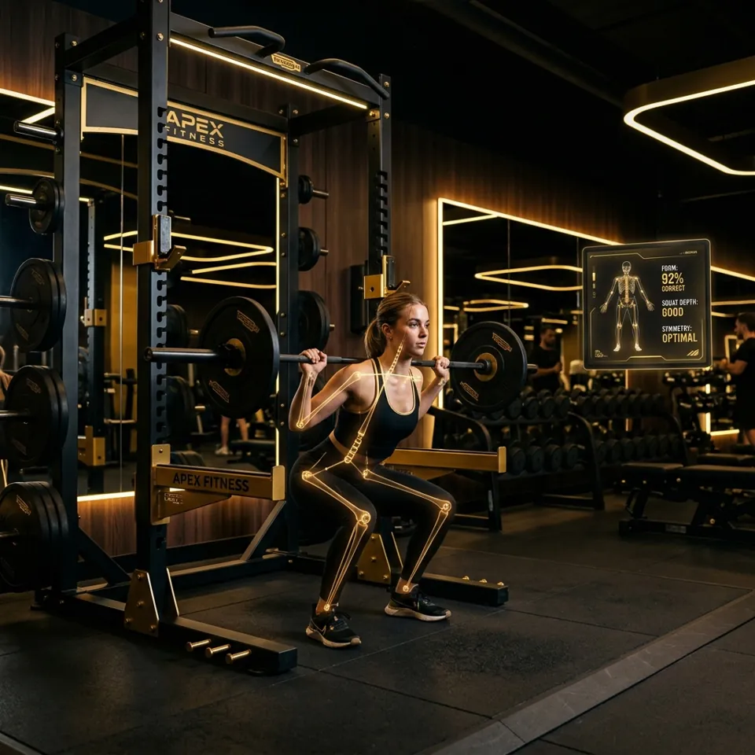

The challenge
Poor form is invisible to the person lifting
Improper exercise kinematics in resistance training frequently lead to musculoskeletal
injury and inefficient neuromuscular recruitment. Beginners often lack access to
qualified supervision or immediate feedback on their form.
Edge computer vision
33 full-body 3D landmarks at 30+ frames per second. Inter-joint vectors are computed
in real time to detect eccentric and concentric phases and evaluate depth and range of motion.
Privacy by architecture
Inference runs client-side on WebAssembly and WebGL. No raw video frames or biometric
telemetry are ever sent to a remote server.